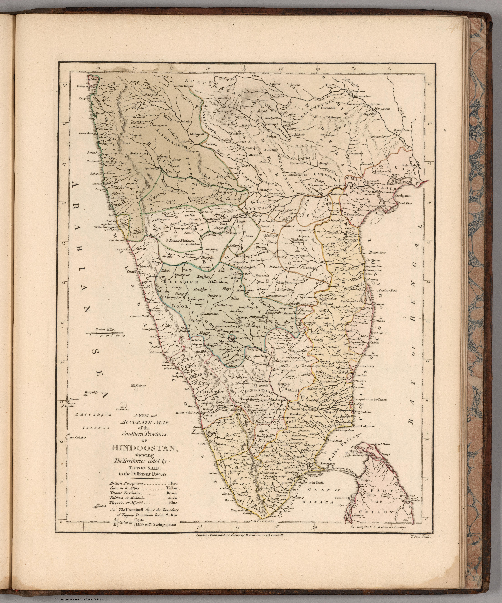

Click to enlargeRobert Wilkinson's New and Accurate Map of the Southern Province of Hindoostan, from his General Atlas. A commercial London atlas map that packages the new survey knowledge of the south for the general British public.
Authorship and object
From Wilkinson's General Atlas of the World (London; this state with an 1809 title-page, the contents dated 1805), in full hand-colour.
A commercial digest
Wilkinson's map is a synthesis rather than a survey — the southern peninsula presented for the atlas-buying public, drawn from the better British maps then circulating. Its claim to be "new and accurate" reflects how quickly the survey-based image was becoming the expected standard even in popular atlases.
The gaze
This is the surveyed south domesticated for the drawing-room — India's newly mapped southern provinces offered to British readers as established, accurate knowledge, the frontier of the survey already behind it.